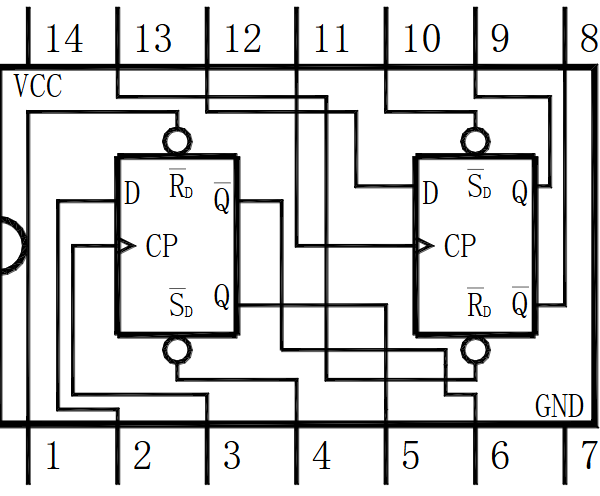
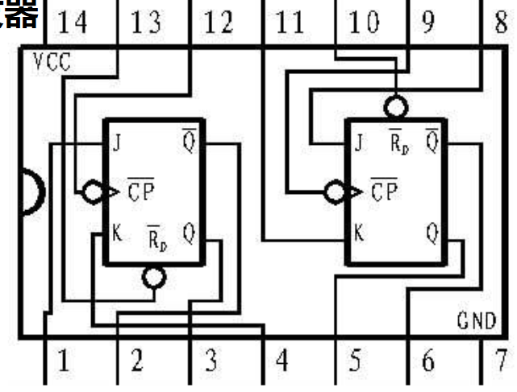

电路与电子技术实验Ⅰ
电路原理部分
测量误差
相对误差分类
某值相对误差：
引用相对误差：
最大引用误差：
其中a为等级指数
直读式数字表的误差表示
直读式数字表的误差表示=被测量大小的相对量+固定量+显示误差
字误差：字数乘以分辨率
有效数字
从左边第一个非0位到最后一位所包含的数字，最后一位为可疑数字
仪器误差数据
数字万用表（3字半）
电阻测量：
电容测量：
电压测量：（仪表输入阻抗10MΩ）
电流测量：（仪表输入阻抗6mA/600uA/60uA是99Ω，60mA/600mA/10A是0.99欧姆，交流电流档内阻0.99Ω）
仪器台上直流电压表
仪器台上直流电流表
数电实验
课程使用芯片介绍：
1. 74LS161二进制加法计数器

CP：输入的信号；
CR：异步清零操作，低电平触发，优先级最高；
LD：置数模式（即通过输入数字）优先级第二高，低电平触发，写入3456引脚读取到的数，同步置数（即读取到CP有上升沿）；
CTp和CTt：有低电平则进入保持
2. 74LS00与非门芯片:
3. 74LS55与或非门芯片
4. 74LS74型双D触发器

5. 74LS107双JK触发器

!!!
数码管显示数字原理: 用四个二进制的高低电平表示一个不大于10的数，四个位由高到低分为Q~D~、Q~C~、Q~B~、Q~A~。
6. 74LS11三输入与门芯片
Quartus文件名后缀
| 后缀 | 全称 |
|---|---|
| .bdf | Block Design File |
| .bsf | Block Symbol File |
| .qpf | Quartus Projct Flie |
| .vhd | VHDL Design File |
| .vwf | Waveform.File |
| .sof | 编译后产生的、将下载到FPGA中的文件的 |
数字式计时器电路：
1. 60进制：
分为个位数码管和十位数码管，个位数码管10进制，十位数码管6进制。个位计时器当计数到10（二进制1010）时，CR置0，所以就需要一个与非门对Q~B~和Q~D~取与非。
2. 24进制：
个位数码管部分基本不改动，但十位的CR需要在计时达到24（即二进制0100 0010）时置0。
全加器
历年题
注意：记得检查自启动！！！
- 首先需要做出110->101->100->011->010->110五个三位二进制循环，输入1HZ信号，将三位输出接入数码管 再做出三位奇偶校验器并接入前面循环的输出，接到发光二极管上，要求在4和2时亮，6, 5, 3时灭 最后将时钟脉冲接入示波器CH1，奇偶校验器结果接入示波器CH2，并将时钟换成1024HZ
验收要求是
(1) 1HZ时观察6，5，4，3，2循环是否正确，奇偶校验器是否正常工作
(2) 1024HZ时，示波器上半部分显示CH1波形，下班部分显示CH2波形，要求显示两个周期左右，保证波形稳定
做法：对减法计数器取反可得加法计数器，用161反馈置数法做出1——5循环再取反，奇偶校验器不用直接列异或表达式，可以只考虑出现的情况画卡诺图列真值表 - 时序电路设计，要求给定输入X与时钟信号CP，输出为Q0Q1Q2，X=0时输出4→5→6→4……的序列，X=1时输出0→1→2→0……的序列
（1）X接逻辑开关，CP接1Hz脉冲，用数码管显示结果。
（2）CP接1024Hz脉冲，用示波器显示稳定的图像，要求CH1接Q1，CH2接Q0。
做法：用161做出3进制计数器，再将X取反接到数码管。这个思路很妙，不知道是怎么想到的。 - 电路实现010-011-100-101-110（搭完此电路，可以先用LED灯给老师验收） 以上述作为输出，进一步搭建奇偶判断电路或者能否被3整除的电路，用示波器观测输入与输出波形
做法：常规的反馈计数法的加法计数器 - 利用JK触发器和与非门芯片，实现信号发生器，其能重复输出10011101信号，并完成连线
做法：先搭000-111的八进制计数器，再画卡诺图列出输出信号的逻辑表达式进行译码。
VHDL语言
基本结构

- LIBRARY:LIBRARY 语句声明库，常用ieee；
- PACKAGE：USE 语句声明程序包，以下为ieee标准库所包含的程序包：
- ENTITY： 使用
ENTITY decode IS定义，定义结束用END decode实体,用于确定设计的输入/输出； - ARCHITECTURE：语法如下图：用于规定实体的内部结构或实体行为，相当于main函数；
语法
标识符
由英文字母大小写、数字和“_”组成
!!! WARNING
大小写不区分，关键字不能做标识符;一定以英文字母开头;下划线不能连用也不能放结尾
数据对象
分类：端口（PORT）、信号（SIGNAL）、变量（VARIALBE）、常量（CONSTANT）
PORT：语法如下：
SIGNAL：
- VARIABLE：
- CONSTANT：
数据类型
标准定义的数据类型：
IEEE预定义的数据类型：
运算符
算术运算符
关系运算符
逻辑运算符
连接运算符
注释语法
--开头，到本行结束为止
属性
关于实体、结构体、类型及信号的一些特征
顺序语句
分类：IF_THEN_ELSE、CASE_WHEN、FOR_LOOP、NULL
IF_THEN_ELSE：
CASE_WHEN：
FOR_LOOP：
NULL：
并行语句
敏感信号
Conception：进程中一些被关注的信号，只有当其中的某个信号变化时，该进程才被执行；
并行信号赋值
实例
设计一个异步清零、同步置数、带计数使能和进位输出的60进制BCD码计数器。
代码实例：